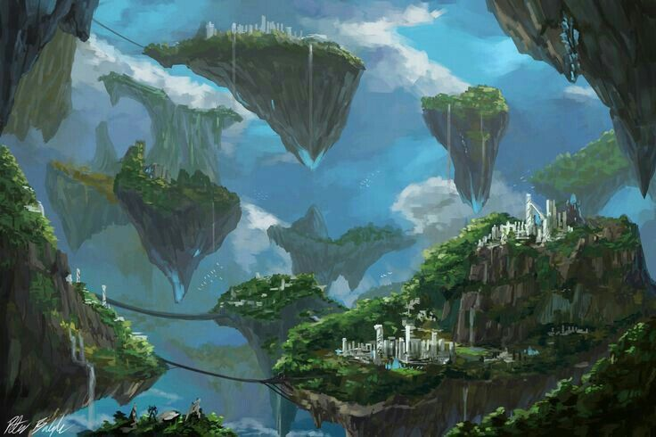

✦ os reinos ✦
🌬️Ilhas que vagam pelos Céus de Astérias
Uma bênção vinda do além — ilhas que flutuam pelos céus como promessa viva de que até os gansos podem virar lendas, e até as guerras podem parir ordem.
✦ história
O que hoje se conhece como Reino Flutuante não nasceu de um rei, nem de uma batalha, nem de um decreto. Nasceu de um ganso.
Conta a tradição que Kaambal — um ganso comum que vivia nos campos onde os ovos dos dragões primordiais que nasceram do sangue de Polaris — foi o único ser que ficou. Enquanto os outros fugiam do calor e do perigo, Kaambal chocou os ovos como se fossem seus, cuidando deles com dedicação silenciosa até que os dragões atingissem a idade adulta. Por essa lealdade improvável, Polaris concedeu a Kaambal a maior das recompensas: transformou-o nas ilhas que vagam pelos Céus de Astérias — eternas, livres, abençoadas.
Mas a terra abençoada não garante paz entre os que nela habitam. Quando as primeiros seres chegaram às ilhas flutuantes, o que encontraram foi abundância — e a abundância, quando não há quem a governe, vira disputa.
Dois grupos se formaram: os Phyton, que acreditavam que as ilhas pertenciam aos que chegassem primeiro, e os Bico de Ferro, que defendiam que a bênção de Kaambal só poderia ser honrada por quem guiasse o povo com sabedoria. A guerra entre eles foi curta, mas brutal — e os Bico de Ferro venceram.
Sobre os vencidos, assumiram a responsabilidade que os havia definido: guiar a população para a harmonia. Desse compromisso nasceu a Dinastia Fênix, que até hoje rege o Reino Flutuante com a lembrança de que o poder conquistado na guerra só se justifica se mantido pela paz.
O que se supõe — e jamais foi confirmado oficialmente — é que uma fração dos Phyton sobreviveu. Não como exilados, mas como sombra. Teria se organizado em uma rede criminosa com um único objetivo: desestabilizar a Dinastia Fênix de dentro para fora, através de tráfico, esquemas e infiltração. O caos que se seguiu foi intenso o suficiente para que o Reino Flutuante recorresse ao Reino Polaris em busca de ajuda para identificar e conter o desespero de uma população que não sabia mais em quem confiar.
✦ cartografia
✦ elenco do reino
Inserir texto...
Dinastia Fêniz
Das cicatrizes nós nos renovamos
A MONARQUIA VER PÁGINA →Família Custodes
Sobre nossas asas, os protegemos
GUARDIÕES VER PÁGINA →Família Alere
A confiança pode ser uma conquista cruel
CAMBIAL VER PÁGINA →Família Pecunia
Uma boa mãe é aquela que faz de tudo pelos seus filhos
ARRIMO VER PÁGINA →✦ tradições
Inserir texto...
LENDA
O ganso que chocou os ovos dos dragões primordiais e foi transformado nas próprias ilhas do reino. Símbolo máximo de lealdade e devoção silenciosa.
HISTÓRIA
A disputa entre os Phyton e os Bico de Ferro que definiu quem governaria as ilhas — e que deixou cicatrizes que ainda sangram nas sombras.
TRADIÇÃO
Inserir texto...
CRENÇA
Inserir texto...